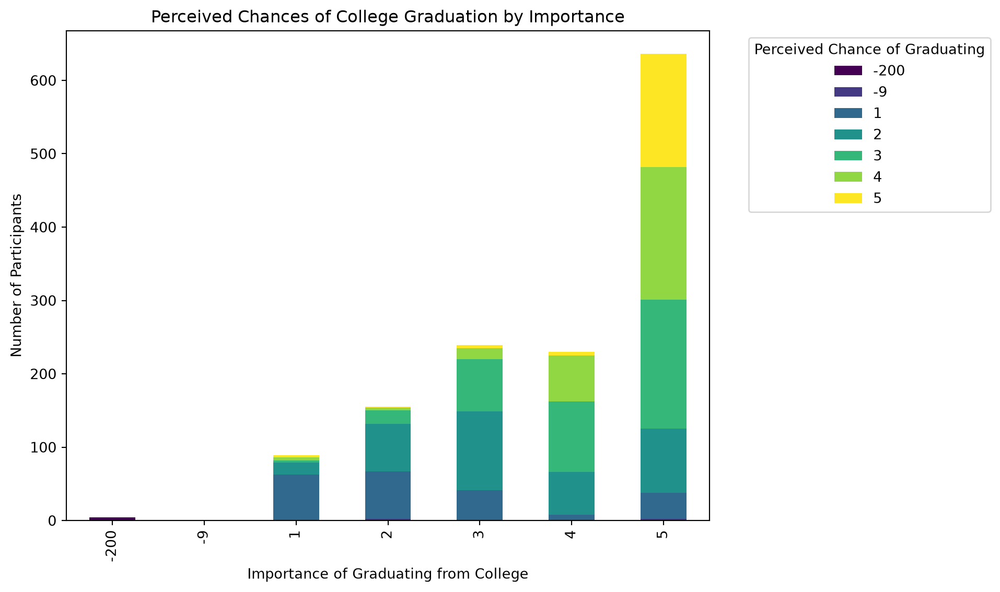

import pandas as pd
from pyprojroot import here # this helps us navigate tricky path stuff between local runs and quarto builds
# Load the data using here() with the path from the project root
file_path_FO = here("projects/reagan/ICPSR_36800/DS0019/36800-0019-Data.tsv")
file_path_perceptions_success = here("projects/reagan/ICPSR_36800/DS0040/36800-0040-Data.tsv")
file_path_procedural_justice = here("projects/reagan/ICPSR_36800/DS0042/36800-0042-Data.tsv")
file_path_ethnic_identity = here("projects/reagan/ICPSR_36800/DS0032/36800-0032-Data.tsv")
file_path_motivation_succeed = here("projects/reagan/ICPSR_36800/DS0031/36800-0031-Data.tsv")
file_path_moral_thinking = here("projects/reagan/ICPSR_36800/DS0030/36800-0030-Data.tsv")
future_orientation = pd.read_csv(file_path_FO, sep='\t')
perceptions_success = pd.read_csv(file_path_perceptions_success, sep = '\t')
procedural_justice = pd.read_csv(file_path_procedural_justice, sep = '\t')
ethnic_identity = pd.read_csv(file_path_ethnic_identity, sep = '\t')
motivation_succeed = pd.read_csv(file_path_motivation_succeed, sep='\t')
moral_thinking = pd.read_csv(file_path_moral_thinking, sep = '\t')Stage 2 Questions
Stage 2.1: Initial Explorations of the Dataset.
Note
This example captures my real, work-in-progress thinking about this dataset. I haven’t gone back and made any revisions. I am writing this page at the same time as I’m asking these questions.
About
Dataset
The dataset is Research on Pathways to Desistance [Maricopa County, AZ and Philadelphia County, PA]: Subject Measures - Scales, 2000-2010 (ICPSR 36800). It is stored in my projects folder, and there’s multiple datasets representing different interview question types (demographic, moral judgement, procedural justice, etc). Below, you’ll see that I’m using inscrutable column names. They are labled in the file projects/reagan/ICPSR_36800/DS0019/36800-0019-Codebook.pdf,projects/reagan/ICPSR_36800/DS0040/36800-0040-Codebook.pdf, projects/reagan/ICPSR_36800/DS0042/36800-0042-Codebook.pdf, projects/reagan/ICPSR_36800/DS0032/36800-0032-Codebook.pdf, projects/reagan/ICPSR_36800/DS0031/36800-0031-Codebook.pdf, and projects/reagan/ICPSR_36800/DS0030/36800-0030-Codebook.pdf.
Research Question
My research question is pretty vague - How do children who were put in the criminal justice system view themselves? I believe using this dataset I can expand my question to answer a question more like, “How do children who were put in the criminal justice system view themselves, their futures, and their relationship with the justice system?” I believe through exploring this dataset I can find something interesting to answer these questions.
First Question
My data sets include:
future_orientation : measuring future planning/thinking. how young ones think of their future
perceptions_success : measures aspirations and expectations about work, family, behavior
ethnic_identity : measures ethnic identity, belonging, and identity achievement
procedural_justice : measures perceptions of police, courts, fairness
motivation_succeed : measures educational aspirations/expectations
moral_thinking : measures moral thinking and how young people justify their treatment of others
I’ll start by looking at the future orientation dataset because I want to see how the children’s future perceptions change over time. I’ll start by making sure I understand the columns. From the codebook I know that the columns are organized into different groups representing different time periods, including S0, S1, S2, S3, and S4. I want to understand how these groups are structured before looking more closely at individual responses.
future_orientation.columnsIndex(['CASEID', 'S0FOI127', 'S0FOI128', 'S0FOI129', 'S0FOI130', 'S0FOI131',
'S0FOI132', 'S0FOI133', 'S0FOI134', 'S0FOI135',
...
'SAFOI007', 'SAFOI008', 'SAFOI009', 'SAFOI010', 'SAFOI011', 'SAFOI012',
'SAFOI013', 'SAFOI014', 'SAFOI015', 'SAFUTURE'],
dtype='str', length=177)# What variables belong to each time period?
# https://docs.python.org/3/builtins/stdtypes.html#str.startswith <- used for this code
for period in ['S0', 'S1', 'S2', 'S3', 'S4']:
print(f"\n{period} variables:")
for col in future_orientation.columns:
if col.startswith(period):
print(col)
S0 variables:
S0FOI127
S0FOI128
S0FOI129
S0FOI130
S0FOI131
S0FOI132
S0FOI133
S0FOI134
S0FOI135
S0FOI136
S0FOI137
S0FOI138
S0FOI139
S0FOI140
S0FOI141
S0FUTURE
S1 variables:
S1FOI001
S1FOI002
S1FOI003
S1FOI004
S1FOI005
S1FOI006
S1FOI007
S1FOI008
S1FOI009
S1FOI010
S1FOI011
S1FOI012
S1FOI013
S1FOI014
S1FOI015
S1FUTURE
S2 variables:
S2FOI001
S2FOI002
S2FOI003
S2FOI004
S2FOI005
S2FOI006
S2FOI007
S2FOI008
S2FOI009
S2FOI010
S2FOI011
S2FOI012
S2FOI013
S2FOI014
S2FOI015
S2FUTURE
S3 variables:
S3FOI001
S3FOI002
S3FOI003
S3FOI004
S3FOI005
S3FOI006
S3FOI007
S3FOI008
S3FOI009
S3FOI010
S3FOI011
S3FOI012
S3FOI013
S3FOI014
S3FOI015
S3FUTURE
S4 variables:
S4FOI001
S4FOI002
S4FOI003
S4FOI004
S4FOI005
S4FOI006
S4FOI007
S4FOI008
S4FOI009
S4FOI010
S4FOI011
S4FOI012
S4FOI013
S4FOI014
S4FOI015
S4FUTUREOkay so there are the same number of variables/interview questions within each time period. Looking at the code book I see it’s the same questions for each time period
Second Question
What are some of the responses/column values? I found an interesting question in the codebook: S0FOI129: S0 FOI: “I think about how things might be in the future”. Lets look at the common responses to that question in the first time period.
future_orientation['S0FOI129'].value_counts()S0FOI129
4 542
3 445
2 232
1 127
-200 8
Name: count, dtype: int64Most answered 4: Always true 3: Often true 2: Rarely true. Okay so mostly they are thinking of the future. How does this change over time?
# first interview
future_orientation['S0FOI129'].value_counts()S0FOI129
4 542
3 445
2 232
1 127
-200 8
Name: count, dtype: int64Majority 4: Always true (542)
# second interview
future_orientation['S1FOI003'].value_counts()S1FOI003
3 510
4 501
2 186
-201 89
1 61
-202 6
-9 1
Name: count, dtype: int64New majority 3: Often true (510) closely followed by 4:Always true (501)
# third interview
future_orientation['S2FOI003'].value_counts()S2FOI003
4 575
3 449
2 181
-201 92
1 55
-202 2
Name: count, dtype: int64Majority 4: Always true
# fourth interview
future_orientation['S3FOI003'].value_counts()S3FOI003
4 534
3 492
2 148
-201 125
1 50
-202 4
-8 1
Name: count, dtype: int64Majority 4: Always true
# fifth interview
future_orientation['S4FOI003'].value_counts()S4FOI003
4 536
3 479
2 171
-201 123
1 40
-202 5
Name: count, dtype: int64So majority throughout interviews 1,3,4 was Always true. 3: Often true barely led in second interview. Overall though nothing too interesting in their respones over time. Most are always thinking of the future.
Question Three
Let me double check the percentages, as there is missing data.
# Interview 1
# Count each response
response_counts = future_orientation['S0FOI129'].value_counts()
# Calculate the total number of responses
total_rows = future_orientation['S0FOI129'].count()
# Calculate the percentage for each response
response_percentages = response_counts / total_rows * 100
print("Number of participants per response:")
print(response_counts)
print("\nPercentage of participants per response:")
print(response_percentages.round(2))Number of participants per response:
S0FOI129
4 542
3 445
2 232
1 127
-200 8
Name: count, dtype: int64
Percentage of participants per response:
S0FOI129
4 40.03
3 32.87
2 17.13
1 9.38
-200 0.59
Name: count, dtype: float64# Interview 2
# Count each response
response_counts = future_orientation['S1FOI003'].value_counts()
# Calculate the total number of responses
total_rows = future_orientation['S1FOI003'].count()
# Calculate the percentage for each response
response_percentages = response_counts / total_rows * 100
print("Number of participants per response:")
print(response_counts)
print("\nPercentage of participants per response:")
print(response_percentages.round(2))Number of participants per response:
S1FOI003
3 510
4 501
2 186
-201 89
1 61
-202 6
-9 1
Name: count, dtype: int64
Percentage of participants per response:
S1FOI003
3 37.67
4 37.00
2 13.74
-201 6.57
1 4.51
-202 0.44
-9 0.07
Name: count, dtype: float64# Interview 3
# Count each response
response_counts = future_orientation['S2FOI003'].value_counts()
# Calculate the total number of responses
total_rows = future_orientation['S2FOI003'].count()
# Calculate the percentage for each response
response_percentages = response_counts / total_rows * 100
print("Number of participants per response:")
print(response_counts)
print("\nPercentage of participants per response:")
print(response_percentages.round(2))Number of participants per response:
S2FOI003
4 575
3 449
2 181
-201 92
1 55
-202 2
Name: count, dtype: int64
Percentage of participants per response:
S2FOI003
4 42.47
3 33.16
2 13.37
-201 6.79
1 4.06
-202 0.15
Name: count, dtype: float64# Interview 4
# Count each response
response_counts = future_orientation['S3FOI003'].value_counts()
# Calculate the total number of responses
total_rows = future_orientation['S3FOI003'].count()
# Calculate the percentage for each response
response_percentages = response_counts / total_rows * 100
print("Number of participants per response:")
print(response_counts)
print("\nPercentage of participants per response:")
print(response_percentages.round(2))Number of participants per response:
S3FOI003
4 534
3 492
2 148
-201 125
1 50
-202 4
-8 1
Name: count, dtype: int64
Percentage of participants per response:
S3FOI003
4 39.44
3 36.34
2 10.93
-201 9.23
1 3.69
-202 0.30
-8 0.07
Name: count, dtype: float64# Interview 5
# Count each response
response_counts = future_orientation['S4FOI003'].value_counts()
# Calculate the total number of responses
total_rows = future_orientation['S4FOI003'].count()
# Calculate the percentage for each response
response_percentages = response_counts / total_rows * 100
print("Number of participants per response:")
print(response_counts)
print("\nPercentage of participants per response:")
print(response_percentages.round(2))Number of participants per response:
S4FOI003
4 536
3 479
2 171
-201 123
1 40
-202 5
Name: count, dtype: int64
Percentage of participants per response:
S4FOI003
4 39.59
3 35.38
2 12.63
-201 9.08
1 2.95
-202 0.37
Name: count, dtype: float64Yes so nothing too interesting out of this. I’ll pivot now to look at another dataset–the motivation to succeed dataset.
Fourth Question
I now want to look at my motivation to succeed dataset to understand how young people in the criminal justice system think about their educational futures and whether their aspirations match their expectations.
Looking through the codebook, I noticed two questions that seem particularly interesting: how far participants would like to go in school (S0SCH46) and how far they think they will go (S0SCH47)
# Count how far they'd like to go
# Count each response
response_counts = motivation_succeed['S0SCH46'].value_counts()
# Calculate the total number of responses
total_rows = motivation_succeed['S0SCH46'].count()
# Calculate the percentage for each response
response_percentages = response_counts / total_rows * 100
print("Number of participants per response:")
print(response_counts)
print("\nPercentage of participants per response:")
print(response_percentages.round(2))Number of participants per response:
S0SCH46
4 633
2 385
3 184
5 133
1 16
-9 3
Name: count, dtype: int64
Percentage of participants per response:
S0SCH46
4 46.75
2 28.43
3 13.59
5 9.82
1 1.18
-9 0.22
Name: count, dtype: float6446.75% would like to graduate from college.
# How far they think they will go
# Count each response
response_counts = motivation_succeed['S0SCH47'].value_counts()
# Calculate the total number of responses
total_rows = motivation_succeed['S0SCH47'].count()
# Calculate the percentage for each response
response_percentages = response_counts / total_rows * 100
print("Number of participants per response:")
print(response_counts)
print("\nPercentage of participants per response:")
print(response_percentages.round(2))Number of participants per response:
S0SCH47
2 479
4 463
3 232
5 94
1 73
-9 13
Name: count, dtype: int64
Percentage of participants per response:
S0SCH47
2 35.38
4 34.19
3 17.13
5 6.94
1 5.39
-9 0.96
Name: count, dtype: float64Constrasted with 35.38% think they’ll graduate high school, and 34% think they’ll get to graduate college. Let me look at the change over time.
Fifth Question
I want to see how the answers to how far participants would like to go in school (S0SCH46) and how far they think they will go (S0SCH47) changes over time.
I already calculated in the first interview 46.75% would like to graduate from college, whereas 35.38% think they’ll graduate high school, and 34% think they’ll get to graduate college. Since there’s 10 interview stages (S0,S1,S2,S3,S4,S5,S6,S7,S8,S9), I’ll simply look at the last (S9) and first (S0) interview questions.
# Count how far they'd like to go
# Count each response
response_counts = motivation_succeed['S0SCH46'].value_counts()
# Calculate the total number of responses
total_rows = motivation_succeed['S0SCH46'].count()
# Calculate the percentage for each response
response_percentages = response_counts / total_rows * 100
print("Number of participants per response:")
print(response_counts)
print("\nPercentage of participants per response:")
print(response_percentages.round(2))Number of participants per response:
S0SCH46
4 633
2 385
3 184
5 133
1 16
-9 3
Name: count, dtype: int64
Percentage of participants per response:
S0SCH46
4 46.75
2 28.43
3 13.59
5 9.82
1 1.18
-9 0.22
Name: count, dtype: float64First interview got 46.75% would like to graduate college
# Count how far they'd like to go (3rd interview)
# Count each response
response_counts = motivation_succeed['S9SCH_SCH46'].value_counts()
# Calculate the total number of responses
total_rows = motivation_succeed['S9SCH_SCH46'].count()
# Calculate the percentage for each response
response_percentages = response_counts / total_rows * 100
print("Number of participants per response:")
print(response_counts)
print("\nPercentage of participants per response:")
print(response_percentages.round(2))Number of participants per response:
S9SCH_SCH46
4 456
3 333
2 250
-201 175
5 104
1 34
-9 2
Name: count, dtype: int64
Percentage of participants per response:
S9SCH_SCH46
4 33.68
3 24.59
2 18.46
-201 12.92
5 7.68
1 2.51
-9 0.15
Name: count, dtype: float64Whereas last interview had about 33.68% say they’d like to graduate college, but there’s a good amount of missing data.
# How far they think they'll go
# Count each response
response_counts = motivation_succeed['S0SCH47'].value_counts()
# Calculate the total number of responses
total_rows = motivation_succeed['S0SCH47'].count()
# Calculate the percentage for each response
response_percentages = response_counts / total_rows * 100
print("Number of participants per response:")
print(response_counts)
print("\nPercentage of participants per response:")
print(response_percentages.round(2))Number of participants per response:
S0SCH47
2 479
4 463
3 232
5 94
1 73
-9 13
Name: count, dtype: int64
Percentage of participants per response:
S0SCH47
2 35.38
4 34.19
3 17.13
5 6.94
1 5.39
-9 0.96
Name: count, dtype: float64First interview 35.38% think they’ll graduate high school, followed by 34.19% think they’ll graduate college.
# How far they think they'll go
# Count each response
response_counts = motivation_succeed['S9SCH_SCH47'].value_counts()
# Calculate the total number of responses
total_rows = motivation_succeed['S9SCH_SCH47'].count()
# Calculate the percentage for each response
response_percentages = response_counts / total_rows * 100
print("Number of participants per response:")
print(response_counts)
print("\nPercentage of participants per response:")
print(response_percentages.round(2))Number of participants per response:
S9SCH_SCH47
4 371
3 366
2 299
-201 175
5 73
1 64
-9 6
Name: count, dtype: int64
Percentage of participants per response:
S9SCH_SCH47
4 27.40
3 27.03
2 22.08
-201 12.92
5 5.39
1 4.73
-9 0.44
Name: count, dtype: float64By the last interview 27.40% think they’ll graduate college, and 27.03% think they’ll go to business, technical, or junior college.
In the first interview, 46.75% of participants said they would like to graduate from college. By the last interview, this dropped to 33.68%. Expectations showed a similar pattern -> in the first interview, 34.19% thought they would graduate from college, while 35.38% expected to graduate from high school. By the last interview, 27.40% expected to graduate from college, and 27.03% expected to attend business, technical, or junior college.
This is interesting because the most common responses seem to shift away from college graduation toward other educational options. I wonder whether participants’ educational aspirations and expectations change as they get older and gain more experience, or whether this difference is just simply due to the changing participation rates in the interviews (missing data).
Question Six
I’ve looked at how young people think about their educational futures, and I now want to investigate what they believe makes success possible or difficult. I’ll now look at the perceptions of success dataset.
# How important is graduating from college?
response_counts = perceptions_success['S0OPP02A'].value_counts().sort_index()
total_rows = perceptions_success['S0OPP02A'].count()
response_percentages = response_counts / total_rows * 100
print("Number of participants per response:")
print(response_counts)
print("\nPercentage of participants per response:")
print(response_percentages.round(2))Number of participants per response:
S0OPP02A
-200 4
-9 1
1 89
2 155
3 239
4 230
5 636
Name: count, dtype: int64
Percentage of participants per response:
S0OPP02A
-200 0.30
-9 0.07
1 6.57
2 11.45
3 17.65
4 16.99
5 46.97
Name: count, dtype: float64~47% say very important
# How likely do participants think they are to graduate from college?
response_counts = perceptions_success['S0OPP02B'].value_counts()
total_rows = perceptions_success['S0OPP02B'].count()
response_percentages = response_counts / total_rows * 100
print("Number of participants per response:")
print(response_counts)
print("\nPercentage of participants per response:")
print(response_percentages.round(2))Number of participants per response:
S0OPP02B
3 364
2 334
4 267
1 213
5 167
-9 5
-200 4
Name: count, dtype: int64
Percentage of participants per response:
S0OPP02B
3 26.88
2 24.67
4 19.72
1 15.73
5 12.33
-9 0.37
-200 0.30
Name: count, dtype: float64Scale is 1 Poor, 2 Fair, 3 Good 364, 4 Very Good, 5 Excellent. 26.88% say they have a (3) ‘good’ chance of graduating college, followed by 24.67% (2) fair chance of graduating college.
So interestingly I see that the children see college as very important, and yet don’t believe they have as high of a likelihood to graduate college.
Question Seven
I’d now like to look at this graphically.
# How important is graduating from college?
perceptions_success['S0OPP02A'].value_counts().sort_index()
# How likely do participants think they are to graduate from college?
perceptions_success['S0OPP02B'].value_counts().sort_index()
# Create the crosstab
# The first variable (Importance) becomes the x-axis (rows), the second (Perceived) becomes the stacked colors (columns)
success_ct = pd.crosstab(
perceptions_success['S0OPP02A'],
perceptions_success['S0OPP02B'])import matplotlib.pyplot as plt
success_ct.plot(kind='bar', stacked=True, figsize=(10, 6), colormap='viridis')
# 4. Add labels to make it look nice
plt.title('Perceived Chances of College Graduation by Importance')
plt.xlabel('Importance of Graduating from College')
plt.ylabel('Number of Participants')
plt.legend(
title='Perceived Chance of Graduating',
bbox_to_anchor=(1.05, 1),
loc='upper left')
plt.tight_layout()
plt.show()
Question Eight
Now I want to look at my procedural justice dataset to hopefully answer the question how do the children view the fairness of the justice system? I believe I can split this into 4 questions 1: did the children believe they were heard? 2: do they believe evidence was considered fairly? 3: were the children treated respectfully? 4: were children’s rights taken seriously?
For now I’ll focus on the variables S0PROJUS (How much did police let you tell your story) and S0PROJU3 (How much did the judge let you tell your story) to answer part 1: did the children believe they were heard?
# Police: how much were participants allowed to tell their story?
response_counts = procedural_justice['S0PROJUS'].value_counts()
total_rows = procedural_justice['S0PROJUS'].count()
response_percentages = response_counts / total_rows * 100
print("Number of participants per response:")
print(response_counts.sort_index())
print("\nPercentage of participants per response:")
print(response_percentages.sort_index().round(2))Number of participants per response:
S0PROJUS
-200 1
-9 4
1 353
2 207
3 306
4 483
Name: count, dtype: int64
Percentage of participants per response:
S0PROJUS
-200 0.07
-9 0.30
1 26.07
2 15.29
3 22.60
4 35.67
Name: count, dtype: float6435.67% felt they were allowed to tell (4) none of their story, followed by (1) all of their story. Interesting constrast there.
# Judge: how much were participants allowed to tell their story?
response_counts = procedural_justice['S0PROJU3'].value_counts()
total_rows = procedural_justice['S0PROJU3'].count()
response_percentages = response_counts / total_rows * 100
print("Number of participants per response:")
print(response_counts.sort_index())
print("\nPercentage of participants per response:")
print(response_percentages.sort_index().round(2))Number of participants per response:
S0PROJU3
-200 1
-9 1
-7 52
1 354
2 191
3 255
4 500
Name: count, dtype: int64
Percentage of participants per response:
S0PROJU3
-200 0.07
-9 0.07
-7 3.84
1 26.14
2 14.11
3 18.83
4 36.93
Name: count, dtype: float64So 36.93% felt they were able to tell (4) none of their story, followed by 26.14% said all of it. Interesting constrast there again.
Initial Writing About What I’m Discovering
At this point, I’ve explored a few different datasets, and I’m starting to see some interesting patterns in how young people involved in the criminal justice system think about themselves and their futures.
One of the first things I noticed in my initial steps was that participants generally reported thinking about the future. When I looked at the future orientation questions, the most common response was usually that thinking about the future was “always true.” There wasn’t a particularly dramatic change across the first five interviews for this question. This makes me wonder whether future orientation might be less interesting to explore on its own, or whether I need to look at other questions within this dataset to understand how participants imagine their futures.
The educational aspirations and expectations questions were more interesting. In the first interview, 46.75% of participants said they would like to graduate from college. However, only 34.19% expected to graduate from college, while 35.38% expected to graduate from high school. By the last interview, 33.68% said they would like to graduate from college, and 27.40% expected to graduate from college. These percentages suggest a possible shift in educational aspirations and expectations over time. However I need to be careful here because the number of participants answering questions changes across interviews. I can’t tell from these percentages alone whether individual participants changed their minds or whether the differences reflect who was still participating in the study.
I also looked at how participants perceived their chances of succeeding. About 47% said graduating from college was very important, but the most common responses about their chances of graduating were “good” and “fair.” This seems like an interesting contrast. Participants may value college graduation while feeling less certain that they will achieve it. I want to explore this relationship further.
My last exploration has been the procedural justice dataset. I wanted to understand whether young people felt they were heard by police and judges. The results surprised me. For the police question, 35.67% of participants said they were allowed to tell none of their story, followed by participants who said they were allowed to tell all of their story. For the judge question, 36.93% said they were allowed to tell none of their story, while 26.14% said they were allowed to tell all of it.
I find this particularly interesting because some participants felt completely unheard, while others felt they had a full opportunity to explain themselves. I wonder what accounts for these different experiences. Do young people experience police and judges differently? Do these perceptions relate to their trust in the justice system? And do their experiences change as they move through the system and get older?
Overall, I’m starting to see a possible connection between how young people view their futures and how they experience the justice system. Participants can value educational success and think about their futures while also having different expectations about what they will achieve. Similarly, their experiences of being heard by police and judges appear to vary. I don’t yet know whether these patterns are connected, but I think they offer a promising direction for further exploration.
My next step is to investigate the procedural justice questions more closely, including whether participants felt evidence was considered fairly, whether they were treated respectfully, and whether their rights were taken seriously. I also want to look at changes across interview waves while accounting for missing data and differences in participation.